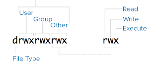

Unix
İşletim sistemlerinin kralı tartışmasız Unix. Geliştirilmesi 70'li yıllarda başlayan ve C programlama diline yakın oluşuyla daha da yayılan bu sistem çekirdeksel olarak şu anda cep telefonlar dahil olmak üzere milyarlarca makina üzerinde işliyor.
Süreçler
Unix'i Unix yapan pek çok kavram var. Kullanıcıya pek gözükmeyen sahne arkasındaki programları denetleyen, işleten çekirdek seviyesinde yaptıkları var, dosya / dizin bazında kullanıcıya gözüken kısmı var.
Unix'te süreç kavramı önemli. Her işleyen program bir süreç içinde
işler, diğerlerinden ayrı çevre değişkenleri, yerel hafıza bloğu
vardır (global hafızaya özel programlama ile erişilebilir). O anda
bilgisayarınızdaki işleyen süreçleri görmek için ps -eaf
işletebiliriz, mesela bende
burak 15316 15314 0 11:21 pts/0 00:00:05 mplayer -quiet -playlist http://
burak 15400 1 2 11:24 tty2 00:01:43 /usr/bin/emacs25
burak 16320 1 1 11:47 tty2 00:00:49 /usr/lib/firefox/firefox -new-wi
burak 16487 16320 0 11:47 tty2 00:00:26 /usr/lib/firefox/firefox -conten
root 17133 2 0 11:54 ? 00:00:01 [kworker/u8:2+ev]
listesi var. Hakikaten şu anda Emacs içindeyim, arka planda Firefox işliyor, vs. Bunların hepsi görülüyor. Bu süreçler yokedilebilir, vs., bkz Faydalı Unix Komutları.
Süreç listesini daha renkli olarak htop komutu ile görebiliriz (bağlantı altta).
Komut Satırı, Kabuk
Unix'te çoğu işlem komut satırı etrafında döner, en azından usta admin, kullanıcılar onu tercih eder. Programları başlatmak, idare etmek, gözetlemek için tercih edilir, script yazabilme ve onları işletebilme açısından komut satırı hep faydalı olmuştur. Görsel tıklamayı hatırlamak yerine istenen aksiyonu temsil eden birkaç harfi hatırlamak ve klavyede yazmak her zaman daha hızlıdır, bu açıdan 'bir resim bin kelimeye bedeldir' sözü Unix'te tepetaklak olmuştur, 'birkaç harf bin resme bedeldir' demek daha doğru olur.
Komut satırını başlattığımızda, mesela Ubuntu Linux'ta Terminal programı ile, bir süreç başlatılmıştır, ve bu süreç bir işler programın çağrılması ile olmuştur. Komut satırı başlatıyorum ve süreç listesine bakıyorum,
burak 14899 14890 0 11:20 pts/0 00:00:00 bash
görülüyor. Komut satırı, "kabuk (shell)" programı bu işte. Tabii komut
satırları tek tip değil, pek çok farklı program var, üstteki bash,
ona has özellikleri var, ama sh de var, ya da tsch var,
vs. Terminale gidip
echo $SHELL
deyince
/bin/bash
cevabı alıyorum. Kabuk tipi orada tanımlı. Bu arada SHELL bir çevre
değişkeni (environment variable), bir anlamda içinde olduğumuz sürecin
"çevresini" tanımlıyor, bu açıdan uygun isim. Çevre değişkenleri her
kabuk için farklı olabilir, birinden set ettiğimiz değişkeni
diğerinden göremeyebiliriz, ALI=veli deyin, echo $ALI bir veli
sonucunu verir, bir diğer bash ekranına gidin, aynı komut boş sonuç
verecektir.
Her bash penceresinin başlangıç değerleri her kullanıcı için ana /
ev (home) dizindeki .bashrc içinde set edilir. Dikkat, farklı kabuk
kullananlar için bu başlangıç dosyası farklı olur, mesela csh için
.csh.
Global ayarlar .bashrc den önce işletilen (bash icin) /etc/profile
icindedir. Her kullanıcı başlangıçta yapılmasını istediği şeyleri
kendi .bashrc'si içine koyabilir, admin her kullanıcı için
işlemesini istediği şeyler varsa onları /etc/profile içine koyar.
Ev dizini her kullanıcı için ana dizindir, echo $HOME ile ne
olduğunu görebilirsiniz, tek cd komutu çoğu kabukta otomatik olarak
sizi ev dizine götürür. Ubuntu'da bu benim icin /home/burak mesela.
Program Başlatmak
Kabuktan program başlattığımızda, mesela günün tarihi veren date
ile, satırda
$ date
dedik ve sonuç
Mon Jul 27 14:21:08 EEST 2020
geldi, bu komutu işlettiğimizde arka planda birkaç şey oldu. date
dedik ama hangi date? Bu programın işler kodunun olduğu dosya nerede?
Soru cevabı which date ile alınabilir, cevap olarak /bin/date
geldi bizde. Hakikaten orada bir date programı var,
$ ls -al /bin/date
-rwxr-xr-x 1 root root 100568 Jan 18 2018 /bin/date
Pek çok "sistem komutu" /bin/ altındadır bu arada. Peki sadece
date deyince sistem /bin/date işletmesini gerektiğini nasıl bildi?
Burada PATH kavramı var, kabuk çevre değişkenleri içinde PATH adlı
dizin listesi program işletince nerelere bakılması gerektiğini tanımlar,
$ echo $PATH
/usr/local/sbin:/usr/local/bin:/usr/sbin:/usr/bin:/sbin:/bin...
Görüldüğü gibi /bin dizini listede (sonda), ve bash işletilmesi
istenen programı arayıp bu son dizinde buldu. PATH değişkeni
başlangıç ayar dosyasında set edilir, bash için .bashrc ve
/etc/profile.
Eğer karışıklığı meydan bırakmayacak şekilde bir programı direk
işletmek istersek bunu komut satırında /bin/date yazarak
yapabilirdik. Hatta script yazarken tavsiye edilen yaklaşım budur.
Üstteki ls sonucunun soldaki kısmı kafa karıştırmış olabilir,
-rwxr-xr-x ne demek? Alttaki resimle anlatmaya uğraşalım,

En soldaki harf d ise baktığımız şey bir dizindir, - ise dosyadır.
Dikkat edersek kullanıcı (user) harfleri üç tane, grup (group) üç tane, diğerleri (other) üç tane. Bu harf üçlüleri, sırasıyla, o an olduğumuz kullanıcı, dahil olduğumüz grup ve diğerlerinin bu dosya üzerindeki izinlerini gösterir.
Hangi kullanıcı olduğumuzu id ile hemen bulabiliriz.
Her harf öbeği rwx olabilir, tabii bu harflerden bazıları iptal
olabilir, mesela -w- olabilir. Harfler sırasıyla okuma (read), yazma
(write) ve işletme (execute) haklarını temsil eder. Yani üstteki
/bin/date için gördüğümüz -rwxr-xr-x kullanıcı (dosyanın sahibi
olan kişi) için rwx diyor, yani tüm hakları vermiş, ama grup için
r-x demiş, yani grup için yazma hakkı vermemiş.
Grup bu tür izinleri idare etmenin bir kolay yolu bir bakıma, her Unix
kullanıcısı admin tarafından birden fazla gruba atanmış
olabilir. Hangi gruba dahil olunduğunu her kullanıcı groups komutunu
işleterek bulabilir. Grup atamaları /etc/groups dosyası içinde
tutulur. Basit bir metin dosyasıdır, ama tabii ki herkes göremez,
sudo ls -al /etc/group deyin,
-rw-r--r-- 1 root root 936 Jul 20 15:46 /etc/group
Dosya sahibi (admin) hariç başka kimsenin dosyaya yazma hakkı olmadığını görüyoruz.
Izinleri değiştirmek icin chmod kullanılır.
Pek çok şey kabuk etrafında döner dedik, program başlatmak bunlardan
en önemlisi. Bir program ismini yazarak onu komut satırından
başlatırız, ama o programı arka plana atarak ta işletebiliriz. Burada
& işareti devreye girer, mesela xclock desem grafik saat programı
başlar ama onu başlattığım komut satırının "bloklanmış" olduğunu
görebilirim çünkü başlatan program başlatılanın bitmesini
bekliyor. Programı üst sağ köşesindeki kapatma düğmesinden kapatırsam,
ya da başlatan kabuktan Ctrl-C ile durdurursam, ya da başka bir
pencereden kill -9 ile, o zaman kabuğa geri dönüldüğünü
görürüm. Eğer bu bloklamanın olmasını istemiyorsak, en başta xclock
& işletebilirdik, bu xlock programını arka plana atar, hemen geri
döner, bekleme olmaz, böylece ana kabukta hala başka komutlar
işletebilir halde oluruz.
Ama dikkat, her süreç başlattığı sürecin ebeveyni haline gelir, &
ile başlatsak bile başlatan ebeveyn durumundadır, eğer başlatan süreç
ölürse, başlatılan da ölür. Mesela bir konsol komut satırı başlattım,
oradan emacs & ile editörü başlattım, konsolu kapatırsam, emacs
programı da kapanacaktır. O zaman başlatanda "evlatlık reddi" yapmak
lazım, yani emacs & disown. O zaman aradaki bağlantı kopar, başlatan
ölürse başlatılan ölmez.
Referans
Unix, Servisleri Nasıl Başlatıyor?
Bir Makinaya SSH ile Şifresiz Giriş
Serviste İşleyen Komut Satırı - tmux
Ubuntu SWAP Alanı Nasıl Arttırılır?
Unix Rsync - Makineler Arası Dosya Kopyalamanın Hızlı Yolu
Dosya Kodlamasi (File Encoding)